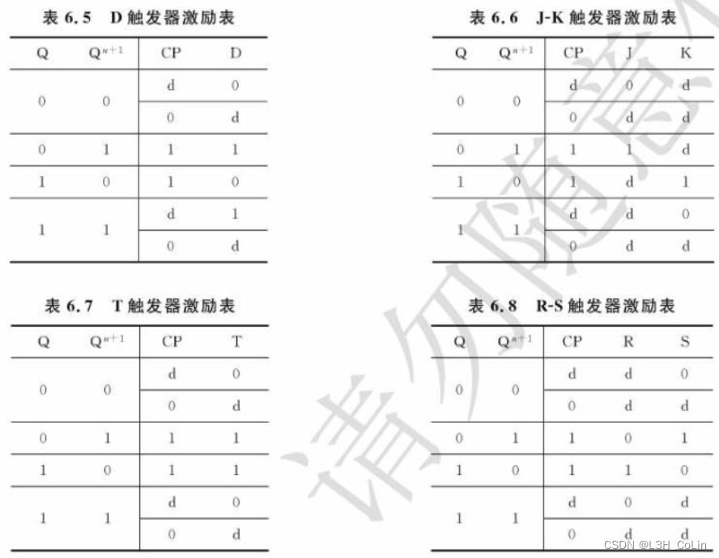
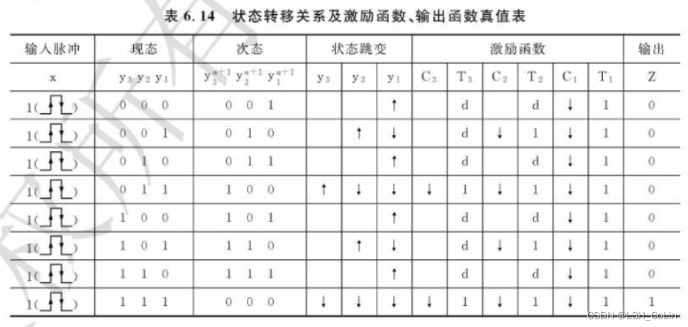

6.1 特点与分类
特点：电路中没有统一的同步时钟脉冲信号，电路状态的改变是外部输入信号变化直接作用的结果。
分类：根据电路结构和输入信号方式可以分为脉冲异步和电平异步；根据输出与输入的关系分为Moore和Mealy。
6.2 脉冲异步时序逻辑电路
6.2.1 结构模型
对输入信号的要求：
- 输入信号为脉冲信号
- 输入脉冲的宽度必须保证触发器可靠翻转
- 输入脉冲的间隔，必须保证前一个脉冲引起的电路响应完全结束后，后一个脉冲才能到来
- 不允许在两个或两个以上的输入端同时出现脉冲（必然有极短的时间差），因此在绘制真值表、状态表时需要注意，如果有多个信号输入，每一种情况只能有一个信号取值为1，其余全为0，减少了很多情况的讨论。也因此，异步时序的状态表有所不同，其次态的每一分栏均为其中一个变量取值为1，而不是三个变量的联合取值
输出信号的形式：
- 若电路结构为Mealy型，则输出为脉冲型
- 若电路结构为Moore型，则输出为电平型
两种电路相同点：
- 状态的改变都依赖于外加脉冲
- 存储元件均为触发器
两种电路不同点：
- 脉冲异步无外加的统一时钟脉冲
- 输入变量x为脉冲信号，由输入脉冲直接引起电路状态改变
- 由次态逻辑产生各触发器控制输入信号（Y1,Y2,…,Yr），而且还产生触发器的时钟控制信号（CLK1,CLK2,…,CLKr）
6.2.2 脉冲异步时序逻辑分析
分析方法：与同步时序大致相同，同样采用状态表、状态图、时间图作为工具
注意：
- 当存储元件采用钟控触发器时，对触发器的时钟控制端应该作为激励函数处理（仅当时钟端有脉冲作用时，才会根据和触发器的输入确定状态转移方向，否则触发器状态不变）
- 根据对输入的约束，分析时可以排除两个或两个以上输入端同时出现脉冲以及输入端无脉冲出现情况
分析步骤：
- 写出电路的输出函数和激励函数表达式
- 列出电路次态真值表或次态方程组
- 作出状态表和状态图
- 用文字描述电路的逻辑功能（必要时画出时间图）
注意：
在脉冲异步的次态真值表中，↓表示下跳，即仅当时钟端有↓出现时，相应触发器状态才能有所变化，否则状态不变
6.3 脉冲异步时序逻辑电路的设计
设计步骤与同步时序相同：
- 形成原始状态图和原始状态表
- 状态化简，求出最小状态表
- 状态编码，得到二进制状态表
- 选定触发器类型，并求出激励函数和输出函数最简表达式
- 画出逻辑电路图
下面是带有时钟信号的钟控触发器激励表

在设计时对于状态表中与时钟端有关的变量，需要标明上升沿或下降沿以明确接线，如下图。
